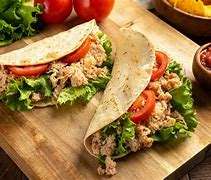

VEJA TAMBÉM
RECEITAS MEXICANAS
Simples, alegre e colorida, a comida mexicana é bem familiar para nós brasileiros. Muito além de tacos com queijo, há petiscos, pratos completos, bebidas e até sobremesas, tudo com a marca do sabor intenso, das mordidas deliciosas e do equilíbrio. Há picância, frescor, acidez, cremosidade e crocância. Escolha suas receitas de comida mexicana preferidas e entre para essa festa de sabores.
vamos cozinhar?
Tacos de Alface com Frango

Tacos de Alface com Frango
Ingredientes:
- Folhas grandes de alface
- - Peito de frango grelhado e desfiado
- Tomate, cebola e coentro picados
veja o passo a passo no YouTube
Mais de 300 pessoas ja comentaram essa receita
Modo de preparo
- passoRecheie as folhas de alface com o frango desfiado e os vegetais picados
- passo Tempere com limão e sirva.
Tabela Nutricional
| Porção 57g |
Quantidade |
| Calorias |
399 kcal |
| Glicidios |
37.4g |
| Gord. sat. |
12.7g |
| Fibras |
4.3g |
| Gord. total |
33 |
| Proteinas |
10og |
| Açúcar |
4.1g |
Dica:
taco, tradicionalmente, é feito com uma tortilla de milho (dura ou mole). Quem quiser preparar a sua tortilha em casa pode encontrar a receita aqui no blog. Você também pode comprar a tortilla pronta, porém normalmente o preço é proibitivo. Costumo aconselhar substituir a tortilha pelo Rap10 da Pullmam, o qual funciona muito bem para os burritos e fajitas. O problema é que, se quisermos ser fiéis ao original, precisamos de uma tortilla de milho e o Rap10 é feito de trigo. De qualquer forma, se você decidir utilizá-lo, garanto que o resultado também será ótimo.
comentários:
Crie ou faça para deixar seu comentário.